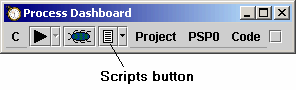
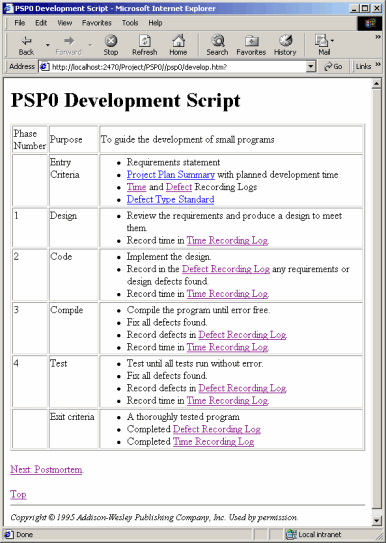
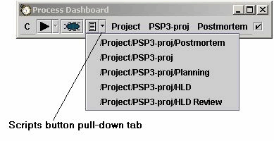

Most of the scripts necessary to perform your work are already included in the Process Dashboard. In particular, the process scripts for all of the PSP levels described in A Discipline for Software Engineering are included.
To access process scripts, hit the script button on the dashboard.

This will start a web browser (if necessary) and point it at an appropriate process script based on which process stage is currently active.

This example shows a project calling up the Development script for PSP level 0.
When you click the script button, it will generally display the script for the phase which is currently selected by the hierarchy menus. Most of the online forms allow you to navigate back to the "top" of the set of process scripts by a link labelled "Top". Also, a link which will take you on to the next phase in the given process is usually shown as well.
The script button pull-down tab allows you to choose a particular form in a more direct manner. Clicking the pull-down on the forms button will bring up a menu of the different phases in the current process. Choosing one of these phases will open up a script appropriate to that phase (e.g. the Planning script opens when the Planning phase is chosen).

The various forms necessary to do your work have data entry fields which are to be used to capture the various process metrics. The forms are continually "live", which means they are always ready and waiting for input. There is no "submit" or "send" button on the forms. Just enter the data in the blanks and the dashboard will record it.
Some blanks on the forms are greyed out. These data elements are computed by the dashboard and do not require data input.